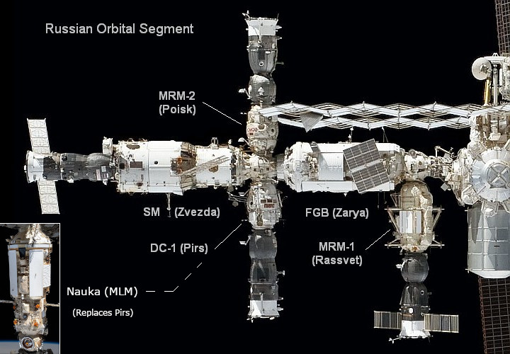
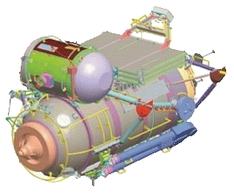
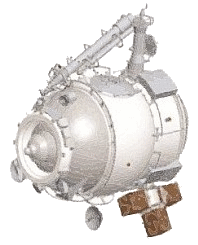

International Space Station (iss)
russian segment docking modules (pirs, rassvet, poisk)
Pirs has been replaced by Nauka. Rassvet is docket to the nadir port of Zarya. Poisk is docked to the zenith port of Zvezda.

Pirs has been replaced by Nauka. Rassvet is docket to the nadir port of Zarya. Poisk is docked to the zenith port of Zvezda.
The Russian Segment is the aft section of the station to the rear of the U.S. Node 1. (Unity). The components in this Segment have Russian standard docking ports and airlocks suitable for Russian space suits. There are two main pressurised modules and three smaller pressurised docking modules attached to the main modules:-
1. Functional Control Block [FGB] (Zarya)
2. Service Module [SM] (Zvezda)
1. Docking Compartment 1. [DC-1] (Pirs) - Attached to the nadir (bottom) port of Zvezda.
1a. Nauka Multipurpose Laboratory Module (MLM) - Replaced Pirs on on 29 July 2021.
2. Mini Research Module 1. [MRM-1] (Rassvet) - Attached to the nadir (bottom) port of Zarya.
3. Mini Research Module 2. [MRM-2] (Poisk) - Attached to the zenith (top) port of Zvezda.
The docking modules main functions are:-
1. Extend the docking ports of the main modules for extra clearance for docking spacecraft.
2. Provide airlocks for space walks using the Russian Orlan EVA suits.
3. Provide additional room for storage and experiments.
4. Support external equipment.
The diagram below shows the main pressurised modules and pressurised docking modules on the Russian Segment of the station.
Click on a docking module name in the diagram to go to its section on this page.
Click on a main module name in the diagram to go to its detail page.

The Russian Docking Module called 'Pirs' (Russian for 'pier') is also called the Stikovochniy Otsek No. 1 [SO1, Docking Module 1] by the Russians and Docking Compartment 1 [DC-1] by the U.S.
Pirs main functions:-
1. Extends the downward facing (nadir) docking port of the SM (Zvezda) to provide extra clearance for docking Russian craft.
2. Is an airlock for space walks using the Russian Orlan EVA suits.
3. Supports two Russian Strela cargo cranes.
4. Transfer fuel from the tanks of a docked Progress resupply vehicle to either the SM (Zvezda) or the FGB (Zarya).
5. Transfer propellant from the SM and FGB to docked vehicles Progress or Soyuz.
Pirs was launched on September 14, 2001, as ISS Assembly Mission 4R using a modified Progress spacecraft, Progress M-SO1, as an upper stage. It replaced the Progress M's standard cargo and fuel sections.
The Pirs/Progress M combination was then launched on a Soyuz U rocket and docked with the nadir (bottom, Earth-facing) port of the Service Module [SM] (Zvezda) in an automatic rendezvous and docking operation. Pirs was then configured during three space walks by the Expedition 3 station crew. The Progress M-SO1 service module was later undocked from Pirs and de-orbited to burn up on re-entry.
The Pirs downward port was then free for future docking of Russian Soyuz TM and TMA piloted spacecraft, Progress supply craft and for use as an airlock for station space walks.
Length - 4.1 m.
Diameter - 2.6 m ovoid.
Mass - 3,900 kg.
Living Volume - 13 cubic metres
The Strela ('Arrow' in english) Russian built cranes were used during EVAs to move cosmonauts and components around the exterior of the Soviet/Russian space station Mir. Two Strela cranes were delivered to Mir by Progress craft and mounted on its core module.
Two new Strela cranes were carried to the ISS on Integrated Cargo Carriers in the U.S. Space Shuttle and mounted on Docking Compartment 1 (Pirs).
1. The first was delivered and installed during U.S. Space Shuttle mission STS-96 [Flight 2A.1] in 1999.
2. The second was delivered and installed during U.S. Space Shuttle mission STS-101 [Flight 2A.2a] in 2000.
The Strela cranes are un-powered telescopic poles assembled in sections, which measure around 1.8m when collapsed.
When extended using a hand crank, measure 46 feet (14 m) long. This means that the cranes on Mir could easily reach all of the main modules of the complex, and those attached to the ISS can be used to transfer objects the full length of the Russian Segment, from the SM to the FGB.
The SSRMS (Canadarm2) robotic arm on the ISS is used to hold crew members during EVA's, move station modules, spacecraft, and orbital replacement units around the U.S. Segment of the station.
The Russian Segment, however, does not require spacecraft or modules to be manipulated, as these all dock, are repositioned or discarded automatically. Each Strela crane can perform all necessary tasks, with less complexity and less maintenance than Canadarm2.
The Nauka Multipurpose Laboratory Module (MLM) Replaced Pirs on on 29 July 2021.
In preparation for the replacement of Pirs both Strela cranes needed to be moved. One was relocated to the Mini-Research Module [MRM] (Poisk) in February, 2012 and the second was moved to the FGB (Zarya) in August 2012.
During its twenty years at the ISS, Pirs supported 52 spacewalks and served as a docking port for many Russian Soyuz and Progress ferry ships carrying crew and cargo to the space station. On July 26, 2021, Pirs was un-docked from the nadir (bottom) port of Zvezda by using the attached Progress MS-16 cargo craft.
Four minutes after un-docking Progress MS-16, with Pirs attached, performed a short separation burn to increase distance from the ISS. The de-orbiting maneuver was three hours later with Pirs/Progress re-entering the atmosphere and burning up over the Pacific.
Mini Research Module 1. [MRM-1], called Rassvet, was formerly known as the Docking Cargo Module (DCM). The module's design is similar to the docking module used delivered to the Russian Space Station Mir in 1995.
MRMs are small cylindrical pressurised modules installed on the Russian Segment of the station. There are two MRMs currently installed on the station; MRM-1 called Rassvet and MRM-2 called Poisk. They have some similar facilities but are different in size and function. MRM-2 was installed on the station before MRM-1.
Rassvet is primarily used for cargo storage, as a mini-research laboratory and as a docking port for visiting spacecraft. Rassvet has two docking units: one to attach to the nadir port of the Zarya module, and one to provide a docking port for a Soyuz or Progress spacecraft.
The initial ISS plan included a Russian Docking and Storage Module (DSM). This was intended to provide facilities for stowage and an additional docking port. It would have been similar in size and shape to them SM (Zvezda) and mounted on its nadir (Earth-facing) docking port. The DSM was cancelled, but its design was eventually modified into MRM-1 (Rassvet).
It was then proposed that a Multi Purpose Module (MPM) called Enterprise should be docked to the FGB (Zarya). This was also cancelled and the Multipurpose Laboratory Module (MLM) will now be docked to the Zvezda's nadir port instead.
Rassvet was designed as a solution to two problems facing the ISS partners:-
1. NASA was under contract to carry the MLM outfitting equipment into space.
2. The overlapping missions of the Progress, Soyuz, and ATV spacecraft highlighted the need to have four Russian docking ports available on the station.
Without both Russian Research Modules and after the installation of the Permanent Multipurpose Module the ISS would be left with just three Russian docking ports.
Rassvet solved both of these issues.
1. NASA did not need to add another payload flight to accommodate the MLM outfitting equipment, as it could attach the hardware to the exterior of Rassvet.
2. The station now has 4 docking ports available on the Russian segment:-
* Service Module [SM] (Zvezda) aft port
* Docking Compartment 1 [DC-1] (Pirs)
* MRM-2 (Poisk) (on the SM's zenith port)
* MRM-1 (Rassvet) (on the SM's nadir port).
Module launch mass 5,075 kg
Total Launch mass 8,015 kg
Maximum hull diameter 2.35 m
Hull length between docking assembly planes 6 m
Pressurized volume 17.4 m3
Habitable volume 5.85 m3
The module was designed and built by S.P. Korolev RSC Energia, from the already-made pressurized hull of the mock-up for dynamic tests of the canceled Science Power Platform.
In December 2009, an Antonov An-124 carrying the Rassvet Module and ground process equipment arrived at the Kennedy Space Center in Florida. Upon unloading, the equipment was delivered to a pre-launch processing facility run by the Astrotech.
Energia specialists and technicians continued their work on the processing of the Rassvet module at the facility, completing stand-alone electrical tests and leak tests of the module and the airlock.
They also prepared the airlock and the radiative heat exchanger for installation onto Rassvet.
The module was moved to NASA's Space Station Processing Facility in April 2010. After completing the final touches, it was placed into the shuttle payload transporter and and delivered to the launch site.
MRM-1 was delivered to the station by U.S. Space Shuttle Atlantis on the STS-132 (Flight ULF4) mission in May 2010. It was docked to the bottom port of the Russian FGB (Zarya) using the station robot arm.
Rassvet carried externally attached outfitting equipment from NASA for the Nauka Multipurpose Laboratory Module [MLM], a spare elbow joint for the European Robotic Arm [ERA], and a radiator.
Mini Research Module 2. [MRM-2], called Poisk, was originally named Docking Module 2 (Stykovochniy Otsek 2 (SO-2)), as it is almost identical to Docking Compartment 1. [DC-1] (Pirs).
MRMs are small cylindrical pressurised modules installed on the Russian Segment of the station. There are two MRMs currently installed on the station; MRM-1 called Rassvet and MRM-2 called Poisk. They have some similar facilities but are different in size and function. MRM-2 was installed on the station before MRM-1.
Poisk provides an additional port for docking Russian spacecraft, is an airlock for crew using Russian space suits, provides points for installation of external equipment and has a cargo boom. It also has two egress hatches for space walks.
Although it is designated as Mini-Research Module 2, Poisk was installed on the station before the Mini Research Module 1. [MRM-1] (Rassvet), which has a different design.
Launch mass 3670 kg +/- 50 kg
Maximum hull diameter 2.55 m
Pressurized volume 14.8 m3
Habitable volume 10.7 m3
Number of egress hatches (open inward) 2
Egress hatch diameter 1 m
Mass of delivered cargoes up to 1000 kg
Hull length between docking planes 4.049 m
The module was designed and built by S.P. Korolev RSC Energia, the main organization which developed the Russian segment.
Poisk was also flown to the station, un-piloted, using a modified Russian Progress M cargo vehicle, called Progress M-MIM2, in November 2009. It was launched on a Soyuz-U rocket from Launch Pad 1 at the Baikonur Cosmodrome in Kazakhstan. Progress M-MIM2 provided electrical power and propulsion for the Poisk module during its two-day journey to the space station.
Poisk/Progress M-MIM2 began its automated final approach to the station on a Kurs rendezvous radar system and was docked by remote control to the zenith (top) port of the Russian Service Module [SM] (Zvezda). It was the first major Russian addition to the ISS since 2001.
Cosmonauts entered Poisk for the first time on 13 November 2009 and Progress M-MIM2 was jettisoned from it on 8 December 2009. This vehicle was destroyed during re-entry into the atmosphere.
Poisk carried about 816kg (1800 pounds) of cargo to the station including new Russian Orlan space suits, life support equipment, medical supplies and crew hygiene items.